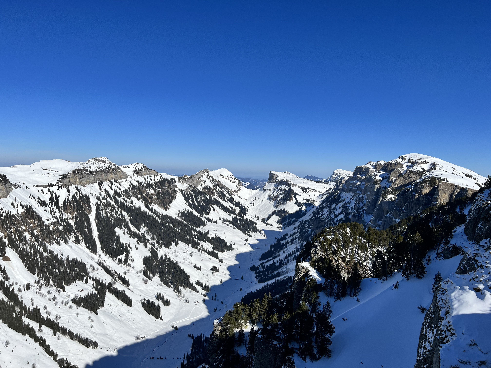

Niesen
This so called The Pyramid of Switzerland is the landmark of lake of Thun region. The summit of the mountain is 2,362 metres in elevation. The hike up was quite challenging for me but it was so worth it. What I love the most is the view from top where we can see 2 lakes that surround this mountain. If you feel ready to hike around 5 hours, you can start to hike from the first station to top. I personally, take the Niesenbahn funicular until Schwandegg station and hike up to Niesen Kulm. It took me around 3 hours as I like to stop often to take some photos. ;)

Niederhorn
The Niederhorn (elevation 1963 metres) is a peak of the Emmental Alps in the Bernese Oberland near Beatenberg. I enjoyed the most the view from the aerial cable car to the summit. Afterwards, we can walk along the mountain while enjoying the view of lake of Thun and Thun region itself. I personally like to visit this mountain in winter. It feels so magical with the sparkling snow when the sun shines.